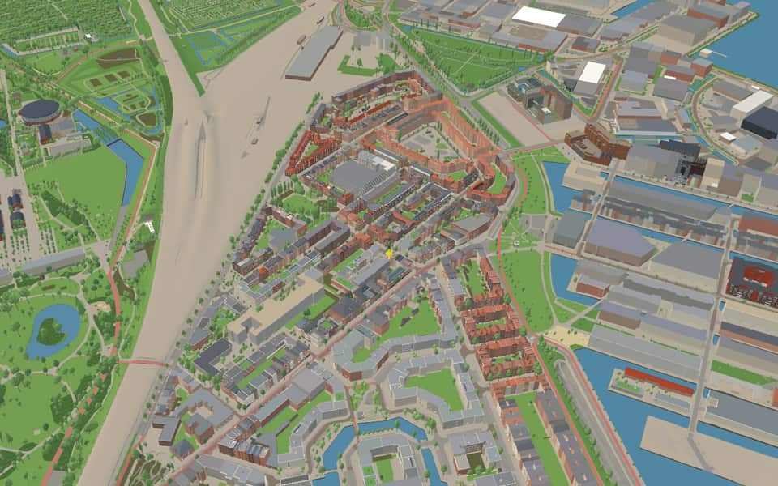
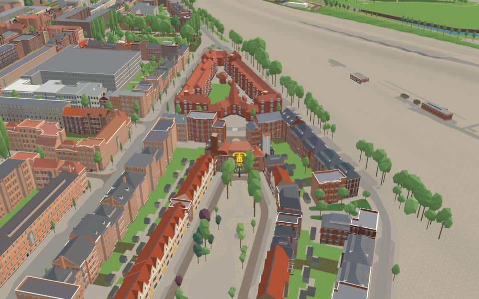
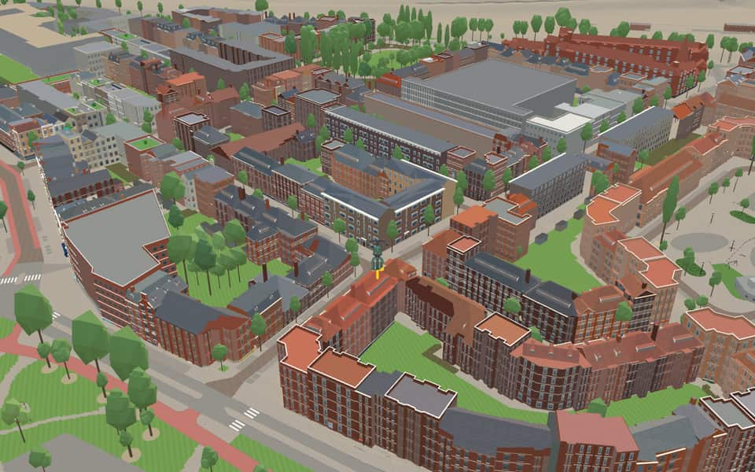
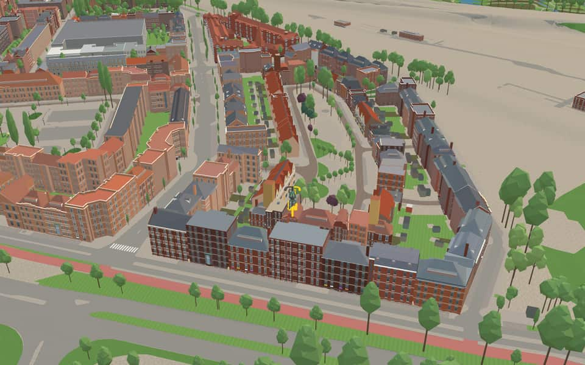

Quarter · Amsterdam
Spaarndammerbuurt
Spaarndammerbuurt is a neighborhood of Amsterdam, Netherlands. en.wikipedia.org
The name. Named after the Spaarndammerstraat, which on 20 November 1878 was named after the village of Spaarndam, north-east of Haarlem. nl.wikipedia.org
Ride Spaarndammerbuurt14 modelled buildings · 14 facts · 35 name stories


In the game
Frames from a ride through Spaarndammerbuurt.




6 more photos of Spaarndammerbuurt


.jpg){kind=link}


Built here
Buildings modelled one by one for the ride.
Museum Het Schip
Polanenstraat 229 to 309 (11 houses)
Zaanhof 1 to 19 (10 houses)
- No picture yet
Zaanhof 23 to 33 (6 houses)
- No picture yet
Zaanhof 125 to 133 (5 houses)
- No picture yet
Hembrugstraat 216 to 168 (4 houses)
- No picture yet
Zaanhof 71 to 77 (4 houses)
- No picture yet
Hembrugstraat 132 to 100 (3 houses)
- No picture yet
Zaanhof 99 to 103 (3 houses)
- No picture yet
Hembrugstraat 21 to 25 (2 houses)
- No picture yet
Houtrijkstraat 381 to 399 (2 houses)
- No picture yet
Polanenstraat 240 to 222 (2 houses)
- No picture yet
Zaanhof 52 to 54 (2 houses)
- No picture yet
Politiebureau Houtmankade, Houtmankade 34, Amsterdam (1993; police bureau on the ground floor of a curved housing block, one pand)
Did you know
Trivia the ride can show you here.
- Known for Michel de Klerk’s Amsterdam School workers’ housing at Het Schip. Wikipedia (translated from Dutch)
- The neighbourhood’s name comes via Spaarndammerstraat from the village of Spaarndam. Wikipedia
- The former post office in the Het Schip complex became a museum in 2001. Wikipedia (translated from Dutch)
- Museum Het SchipArchitect Michel de Klerk designed the complex in 1919. en.wikipedia.org
- Museum Het SchipThe socialist group Eigen Haard commissioned architect Michel de Klerk to design this housing block. en.wikipedia.org
- Le MairegrachtBoth banks of this waterway are officially designated as Le Mairekade. nl.wikipedia.org
- Le MairegrachtOne crossing was delivered in 1964 and served as Noordpoolbrug until 2016. nl.wikipedia.org
- Van NoordtgrachtThe waterway once formed part of an inner harbor along the Westerkanaal. nl.wikipedia.org
- HoutmankadeA council officially named this quay on May 15, 1878. nl.wikipedia.org
- HoutmankadeThe eastern side of the quay is split into two parts because a canal interrupts it. nl.wikipedia.org
- SpaarndammerdijkThe dike was significantly shortened after the Saint Elizabeth flood of 1421. nl.wikipedia.org
- SpaarndammerdijkResidents from Houtrijk, Polanen, Osdorp, and Sloten were originally liable for keeping the dike secure. nl.wikipedia.org
- SpaarndammerstraatA parish church once defined the street's face until it was demolished in 1967. nl.wikipedia.org
- SpaarndammerstraatSupermarket chains and catering spots have settled here over the past decade despite the area's underdeveloped feel. nl.wikipedia.org
Names on the map
Where the canal, bridge and street names come from.
Canals and water
- Le MairegrachtJacob le Maire (1585-1616), explorer, who with Willem Schouten discovered the strait at the southern tip of South America named after him, and the cape they called Cape Horn, after Schouten's home town of Hoorn. A Le Mairestraat had been planned and named elsewhere on 20 November 1878, but that council decision was withdrawn on 19 August 1905.
- Van NoordtgrachtOlivier van Noort (1558-1627), navigator and ship's captain, who sailed round the world via the Strait of Magellan from 1598 to 1601 and later wrote an account of the voyage.
Streets
- AdrichemstraatFormer settlement in the Noordzeekanaal area, east of Beverwijk.
- Aert van NesstraatNaval captain (1625-1693), vice-admiral under Michiel de Ruyter from 1666. He took part in the expedition to Chatham and fought in the naval battles of Solebay and Kijkduin.
- AssendelftstraatVillage in Noord-Holland. The street was originally named Tweede Spaarndammerdwarsstraat (council decision of 30 March 1881). From 2 September 1913 to 6 June 1917 an Assendelftstraat existed in name at another location in this neighbourhood, but it was never built. In 1978 a change in the street pattern gave the street a completely different route.
- BontekoestraatWillem IJsbrantsz Bontekoe (1587-1657), seafarer, known for the account of his voyage of 1618.
- HembrugstraatAfter the former railway bridge over the Noordzeekanaal, which obstructed the port of Amsterdam. The bridge was demolished after the railway tunnel (the Hemtunnel) came into use.
- Henk CurièrekadePeter Heinrich Curière (1911-1981), a legendary figure in the Spaarndammerbuurt for his positive and active involvement in the neighbourhood's urban renewal and as chairman of the neighbourhood improvement committee.
- HoutmankadeThe brothers Cornelis (c. 1540-1599) and Frederik Houtman (died 1625), who in 1595/1597 made the first voyage under the Dutch flag to the East Indies for Amsterdam merchants. Cornelis made a second voyage; Frederik was governor on Ambon for six years and became governor of the Moluccas.
- HoutrijkstraatAfter the former village of Houtrijk en Polanen, now Halfweg. The street was earlier called Tweede Spaarndammerstraat (council decision of 30 March 1881). In 1978, because the street pattern changed, part of the street was renamed and added to the Assendelftstraat.
- KnollendamstraatA village in the Zaan region. The street was originally named Derde Spaarndammerdwarsstraat (council decision of 30 March 1881).
- KoogstraatThe village of Koog aan de Zaan (Noord-Holland).
- KrommeniestraatThe village in the Zaan region. Because of building and demolition the street was shortened in 1978 and part of it was added to the Spaarndammerplantsoen.
- Le MairekadeJacob le Maire (1585-1616), explorer, who discovered the strait at the southern tip of South America named after him, and the cape, which he called Cape Horn after his home town of Hoorn. A Le Mairestraat had been planned and named elsewhere on 20 November 1878, but that council decision was withdrawn on 19 August 1905.
21 more streets with a story
- Le MairestraatJacob le Maire (1585-1616), explorer, who discovered the strait at the southern tip of South America named after him, and the cape, which he called Cape Horn after his home town of Hoorn. A Le Mairestraat had been planned and named elsewhere on 20 November 1878, but that council decision was withdrawn on 19 August 1905.
- Martin VlaarkadeMartinus Vlaar (1904-1975), one of the organisers of the February Strike of 1941, was arrested soon after and freed by American troops in 1945. Afterwards he was very active in the Spaarndammerbuurt.
- NoordkaapstraatThe high rock formation (the North Cape), known as the northernmost point of Norway and of Europe.
- Nova ZemblastraatAn island in the Arctic Ocean (Novaya Zemlya). Barentsz and Heemskerck wintered there in 1596-1597 in their failed attempt to reach the Indies by the northern route. This street was first part of the Roggeveenstraat (council decision of 20 November 1878).
- OostzaanstraatThe village of Oostzaan, east of the Zaan.
- PolanenstraatThe former village of Houtrijk en Polanen, now called Halfweg.
- SpaarndammerdijkThe village of Spaarndam, north-east of Haarlem. The name comes from the dam in the Spaarne.
- SpaarndammerplantsoenThe village of Spaarndam, north-east of Haarlem. The name comes from the dam in the Spaarne.
- SpaarndammerstraatThe village of Spaarndam, north-east of Haarlem. The name comes from the dam in the Spaarne.
- SpitsbergenstraatAn island group in the Arctic Ocean, largely covered by a permanent ice cap, now part of Norway. Spitsbergen was discovered in 1596 by Willem Barentsz. The Dutch whaling station of Smeerenburg was built there in 1619.
- SuikerpleinThis square and the surrounding streets were laid out on the site of the former Wester sugar refinery, which once provided a living for many families in the Spaarndammerbuurt.
- TasmanstraatAbel Jansz. Tasman (1603-1659), navigator and explorer. On his voyages of 1642 and 1644 he discovered the island named after him, Tasmania, and New Zealand (both in 1642).
- UitgeeststraatA village in Noord-Holland.
- Van NoordtkadeOlivier van Noort (1558-1627), navigator and ship's captain, who sailed round the world via the Strait of Magellan from 1598 to 1601 and later wrote an account of the voyage.
- Van NoordtstraatOlivier van Noort (1558-1627), navigator and ship's captain, who sailed round the world via the Strait of Magellan from 1598 to 1601 and later wrote an account of the voyage.
- WestzaanstraatA village west of Zaandam (and west of the Zaan).
- WormerveerstraatA town in the Zaan region. Before 1913 the street was known as Houtrijkkade (council decision of 1 February 1888).
- ZaandammerpleinThe town of Zaandam, which now forms the municipality of Zaanstad with several other places.
- ZaandijkstraatThe place in the Zaan region, now in the municipality of Zaanstad. From 30 March 1881 to 1913 this was the Eerste Spaarndammerdwarsstraat.
- ZaanhofThe place in the Zaan region, now in the municipality of Zaanstad. From 30 March 1881 to 1913 this was the Eerste Spaarndammerdwarsstraat.
- ZaanstraatThe river Zaan, main artery of the Zaan region. The street first appears under the name Houtrijkkade (council decision of 1 February 1888).